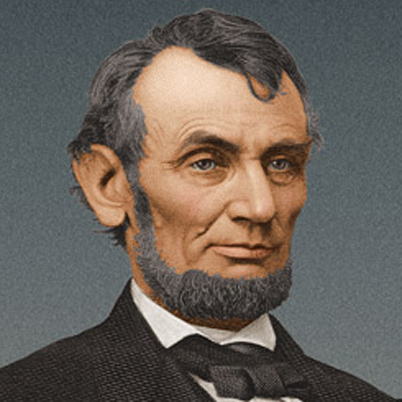

Abraham Lincoln is regarded as one of America's greatest heroes due to both hisincredible impact on the nation and his unique appeal. His is a remarkable story of the rise from humble beginnings to achieve the highest office in the land; then, a sudden and tragic death at a time when his country needed him most to complete the great task remaining before the nation. Lincoln's distinctively human and humane personality and historical role as savior of the Union and emancipator of the slaves creates a legacy that endures. His eloquence of democracy and his insistence that the Union was worth saving embody the ideals of self-government that all nations strive to achieve.
Abraham Lincoln was born in a log cabin in Hardin County, Kentucky to Thomas Lincoln and Nancy Hanks Lincoln. Thomas was a strong and determined pioneer who found a moderate level of prosperity and was well respected in the community. The couple had two other children: Abraham’s older sister Sarah and younger brother Thomas, who died in infancy. Due to a land dispute, the Lincolns were forced to move from Kentucky to Perry County, Indiana in 1817, where the family “squatted” on public land to scrap out a living in a crude shelter, hunting game and farming a small plot. Thomas was eventually able to buy the land.
When young Abraham was 9 years old his mother died of tremetol (milk sickness) at age 34 and the event was devastating on him. The 9-year-old Abraham grew more alienated from his father and quietly resented the hard work placed on him at an early age. A few months after Nancy’s death, Thomas married Sarah Bush Johnston, a Kentucky widow with three children of her own. She was a strong and affectionate woman with whom Abraham quickly bonded. Though both his parents were most likely illiterate, Sarah encouraged Abraham to read. It was while growing into manhood that he received his formal education—an estimated total of 18 months—a few days or weeks at a time. Reading material was in short supply in the Indiana wilderness. Neighbors recalled how Abraham would walk for miles to borrow a book. He undoubtedly read the family Bible and probably other popular books at that time such as Robinson Crusoe, Pilgrims Progress and Aesop’s Fables.
In March, 1830, the family again migrated, this time to Macon County, Illinois. When his father moved the family again to Coles County, 22-year-old Abraham Lincoln struck out on this own, making a living in manual labor. At six feet four inches tall, Lincoln was rawboned and lanky, but muscular and physically strong. He spoke with a backwoods twang and walked with a long-striding gait. He was known for his skill in wielding an ax and early on made a living splitting wood for fire and rail fencing. Young Lincoln eventually migrated to the small community of New Salem, Illinois where over a period of years he worked as a shopkeeper, postmaster, and eventually general store owner. It was here that Lincoln, working with the public, acquired social skills and honed story-telling talent that made him popular with the locals.
When the Black Hawk War broke out in 1832 between the United States and Native Americans, the volunteers in the area elected Lincoln to be their captain. He saw no combat during this time, save for “a good many bloody struggles with the mosquitoes,” but was able to make several important political connections.
After the Black Hawk War, Abraham Lincoln began his political career and was elected to the Illinois state legislature in 1834 as a member of the Whig Party. He supported the Whig politics of government-sponsored infrastructure and protective tariffs. This political understanding led him to formulate his early views on slavery, not so much as a moral wrong, but as an impediment to economic development. It was around this time that he decided to become a lawyer, teaching himself the law by reading William Blackstone’s Commentaries on the Laws of England. After being admitted to the bar in 1837, he moved to Springfield, Illinois and began to practice in the John T. Stuart law firm.
It was soon after this that he purportedly met and became romantically involved with Anne Rutledge. Before they had a chance to be engaged, a wave of typhoid fever came over New Salem and Anne died at age 22. Her death was said to have left Lincoln severely depressed. However, several historians disagree on the extent of Lincoln’s relationship with Rutledge and his level of sorrow at her death may be more the makings of legend.
In 1844, Abraham Lincoln partnered with William Herndon in the practice of law. Though the two had different jurisprudent styles, they developed a close professional and personal relationship. Lincoln made a good living in his early years as a lawyer, but found that Springfield alone didn’t offer enough work, so to supplement his income, he followed the court as it made its rounds on the circuit to the various county seats in Illinois.
Abraham Lincoln served a single term in the U.S. House of Representatives from 1847 to 1849. His foray into national politics seems to be as unremarkable as it was brief. He was the lone Whig from the state of Illinois, showing party loyalty, but finding few political allies. He used his term in office to speak out against the Mexican-American War and supported Zachary Taylor for president in 1848. His criticism of the war made him unpopular back home and he decided not to run for second term, but instead returned Springfield to practice law.
By the 1850s, the railroad industry was moving west and Illinois found itself becoming a major hub for various companies. Abraham Lincoln served as a lobbyist for the Illinois Central Railroad as its company attorney. Success in several court cases brought other business clients as well—banks, insurance companies and manufacturing firms. Lincoln also did some criminal trials. In one case, a witness claimed that he could identify Lincoln’s client who was accused of murder, because of the intense light from a full moon. Lincoln referred to an almanac and proved that the night in question had been too dark for the witness to see anything clearly.His client was acquitted.
About a year after the death of Anne Rutledge, Lincoln courted Mary Owens. The two saw each other for a few months and marriage was considered. But in time Lincoln called off the match. In 1840, Lincoln became engaged to Mary Todd, a high spirited, well educated woman from a distinguished Kentucky family. In the beginning, many of the couple’s friends and family couldn’t understand Mary’s attraction, and at times Lincoln questioned it himself. However, in 1841,
the engagement was suddenly broken off, most likely at Lincoln’s initiative. They met later, at a social function and eventually married on November 4, 1842. The couple had four children, of which only one, Robert, survived to adulthood.
In 1854, Congress passed the Kansas-Nebraska Act, which repealed the Missouri Compromise, and allowed individual states and territories to decide for themselves whether to allow slavery. The law provoked violent opposition in Kansas and Illinois. And it gave rise to the Republican Party. This awakened Abraham Lincoln’s political zeal once again, and his views on slavery moved more toward moral indignation. Lincoln joined the Republican Party in 1856.
In 1857, the Supreme Court issued its controversial decision Scott v. Sanford, declaring African Americans were not citizens and had no inherent rights. Though Abraham Lincoln felt African Americans were not equal to whites, he believed the America’s founders intended that all men were created with certain inalienable rights. Lincoln decided to challenge sitting U.S. Senator Stephen Douglas for his seat. In his nomination acceptance speech, he criticized Douglas, the Supreme Court, and President Buchanan for promoting slavery and declared “a house divided cannot stand.” The 1858 Senate campaign featured seven debates held in different cities all over Illinois. The two candidates didn’t disappoint the public, giving stirring debates on issues ranging from states’ rights to western expansion, but the central issue in all the debates was slavery. Newspapers intensely covered the debates, often times with partisan editing and interpretation. In the end, the state legislature elected Douglas, but the exposure vaulted Lincoln into national politics.
In 1860, political operatives in Illinois organized a campaign to support Lincoln for the presidency. On May 18th at the Republican National Convention in Chicago, Abraham Lincoln surpassed better known candidates such as William Seward of New York and Salmon P. Chase of Ohio. Lincoln’s nomination was due in part to his moderate views on slavery, his support for improving the national infrastructure, and the protective tariff. In the general election, Lincoln faced his friend and rival, Stephan Douglas, this time besting him in a four-way race that included John C. Breckinridge of the Northern Democrats and John Bell of the Constitution Party. Lincoln received not quite 40 percent of the popular vote, but carried 180 of 303 Electoral votes.
Abraham Lincoln selected a strong cabinet composed of many of his political rivals, including William Seward, Salmon P. Chase, Edward Bates and Edwin Stanton.
Formed out the adage “Hold your friends close and your enemies closer”, Lincoln’s Cabinet became one of his strongest assets in his first term in office… and he would need them. Before his inauguration in March, 1861, seven Southern states had seceded from the Union and by April the U.S. military installation Fort Sumter, was under siege in Charleston Harbor, South Carolina. In the early morning hours of April 12, 1861, the guns stationed to protect the harbor blazed toward the fort signaling the start of America’s costliest and most deadly conflict.
braham Lincoln responded to the crisis wielding powers as no other present before him. He distributed $2,000,000 from the Treasury for war materiel without an appropriation from Congress; he called for 75,000 volunteers into military service without a declaration of war; and he suspended the writ of habeas corpus, arresting and imprisoning suspected Confederate sympathizers without a warrant. Crushing the rebellion would be difficult under any circumstances, but the Civil War, with its preceding decades of white-hot partisan politics, was especially onerous. From all directions, Lincoln faced disparagement and defiance. He was often at odds with his generals, his Cabinet, his party, and a majority of the American people.
The Union Army’s first year and a half of battlefield defeats made it especially difficult to keep morale up and support strong for a reunification the nation. With the hopeful, but by no means conclusive Union victory at Antietam on September 22, 1862, Abraham felt confident enough to reshape the cause of the war from “union” to abolishing slavery. Gradually, the war effort improved for the North, though more by attrition then by brilliant military victories. But by 1864, the Confederacy had hunkered down to a guerilla war and Lincoln was convinced he’d be a one-term president. His nemesis, George B. McClellan, the former commander of the Army of the Potomac, challenged him for the presidency, but the contest wasn’t even close. Lincoln received 55 percent of the popular vote and 212 of 243 Electoral votes. On March 28, 1865, General Robert E. Lee, commander of the Army of Virginia, surrendered his forces to Union General Ulysses S. Grant and the war for all intents and purposes was over.
Reconstruction began during the war as early as 1863 in areas firmly under Union military control. Abraham Lincoln favored a policy of quick reunification with a minimum of retribution. But he was confronted by a radical group of Republicans in the Senate and House that wanted complete allegiance and repentance from former Confederates. Before a political battle had a chance to firmly develop, Lincoln was assassinated on April 14, 1865, by well-known actor and Confederate sympathizer John Wilkes Booth at Ford’s Theater in Washington, D.C. Lincoln was taken from the theater to a Petersen House across the street and laid in a coma for nine hours before dying the next morning. His body lay in state at the Capitol before a funeral train took him back to his final resting place in Springfield, Illinois.
Go to top